Air Classic
Ozek opažni les z zaobljenimi robovi da savni klasičen videz. Notranja in zunanja obloga iz masivne trepetlike.
- Obloga
- trepetlika 12×65 mm, softline
- Peč
- standardna finska, nadgradnja v bio
- Luč
- dvotočkovna, z leseno zaslonko
Savne po meri, ki jih od leta 2012 načrtujemo in izdelujemo v lastni delavnici v Šmartnem pri Litiji.

Savne nismo izumili. Dodali smo ji večjo uporabnost, izboljšali ritual savnanja in jo nadgradili z modernim izgledom, ki se sklada z vašim domom.
Visoka vročina, nežno infra sevanje ali oboje v eni kabini. Vsako savno izdelamo po meri vašega prostora.
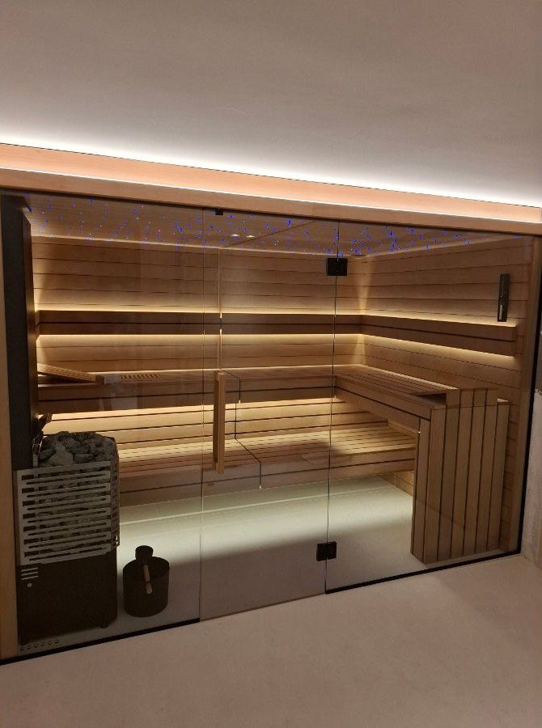
Za ljubitelje visokih temperatur. Bio savna ponudi nižjo temperaturo in višjo vlažnost, za vse, ki jim prava vročina ne odgovarja.

Infrardeči grelci grejejo telo neposredno, enako kot sonce. Solno zeliščni uparjalnik doda vlago, zelišča in himalajsko sol.

Finska ali BIO savna in infrardeča savna v eni kabini. Vsak dan izberete, kakšno toploto želite.
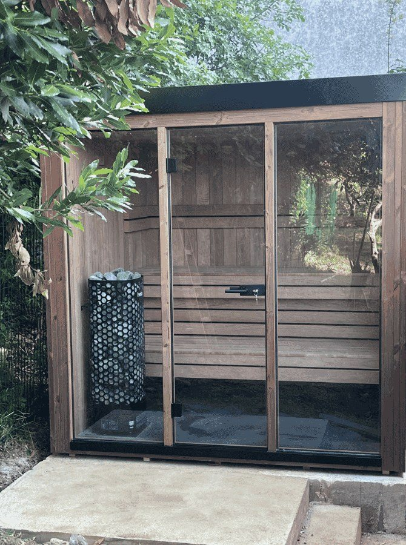
Samostojna savna za vrt ali teraso. Modeli Alta, Ignis, Pinus in Garden, v klasični, premium ali termo izvedbi.
Vse kolekcije so na voljo kot finska, BIO, infra, hibridna ali zunanja savna.
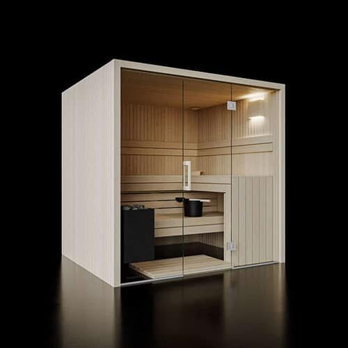
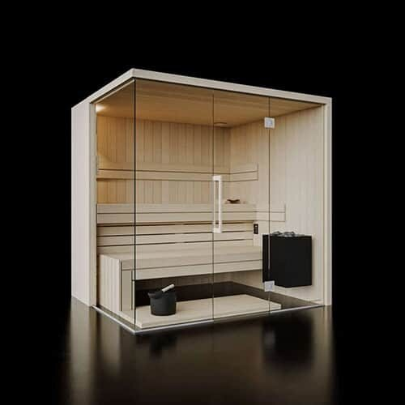
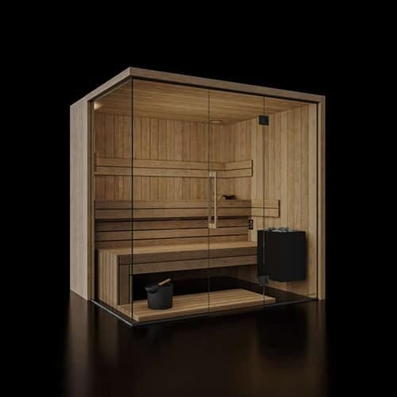
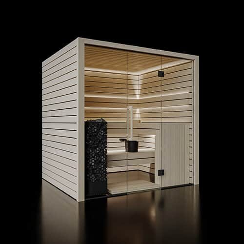
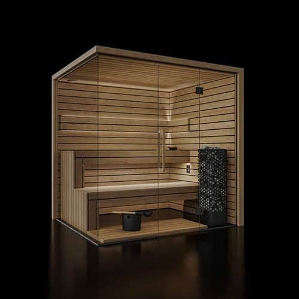


Ozek opažni les z zaobljenimi robovi da savni klasičen videz. Notranja in zunanja obloga iz masivne trepetlike.
Za drzne, ki prisegajo na moderno in ohranjajo stik s tradicijo. Širša letvica z ožjim utorom daje občutek neskončnosti.
Termično obdelana trepetlika, toplotno obdelana pri 180 do 230 °C. Bolj stabilna, bolj odporna na vlago, s prijetnim vonjem.
Ravne moderne linije s poudarjenim črnim spojem. Aluminijasto vedro po vzoru tradicionalnega finskega in pripomočki v črni barvi.
Linije kolekcije Pure v toplejšem tonu parjene trepetlike. Enotna barvna struktura in večja odpornost na vlago.
Navdih tirolskih gora: toplina koče po dnevu na smučeh. Termično obdelana in krtačena nordijska smreka, brez smolnic.
Naša najrazkošnejša kolekcija. Saunaboard plošče, lebdeče klopi in v celoti steklena sprednja stranica.
Investirajte v svoje dobro počutje. Zunanja savna, v kateri se boste vsak dan počutili kot prerojeni.
Model Ignis je na voljo v enakih treh izvedbah.
Vse zunanje savne →

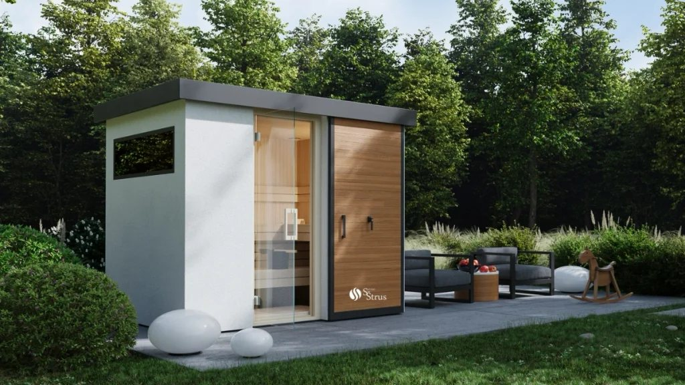
Od izkušenega načrtovanja do natančnega ročnega dela. Vse savne izdelamo po evropskih direktivah in predpisih.
Začnimo s posvetom →Želje nam pošljete prek spletnega obrazca ali pa se dogovorimo za posvet v razstavnem salonu v Šmartnem pri Litiji.
Na podlagi vaših želja pripravimo idejno zasnovo savne in ponudbo.
Po potrditvi naročila izvedemo meritev prostora na objektu.
Izdelamo delavniški načrt, savno pa izdelamo v lastnem proizvodnem obratu.
Savno zmontiramo na objektu, jo zaženemo in vam pokažemo njeno delovanje.

Mehak les brez smol in grč, izjemno obstojen pri visoki temperaturi in vlagi.
Parjena trepetlika je bolj stabilna, bolj odporna na vlago in dobi enoten, topel ton.

V steni ali v klopi, razporejeni po čim večji površini.
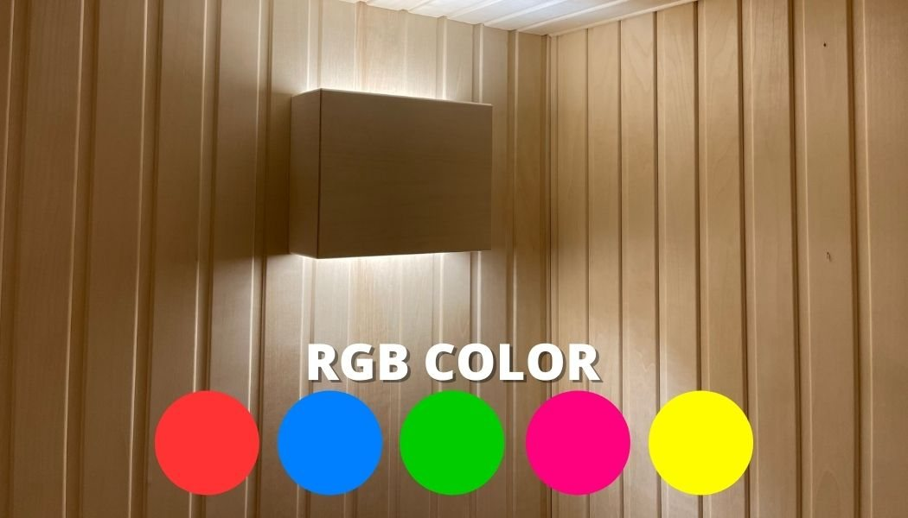
Bela ali RGB linijska osvetlitev in zvezdno nebo.
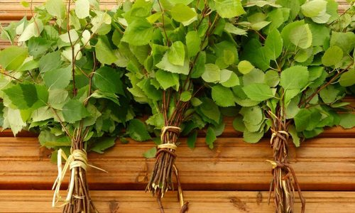
Zelišča, eterična olja in himalajska sol.
Pet načinov savnanja v eni peči, iz materialov, odpornih proti koroziji.
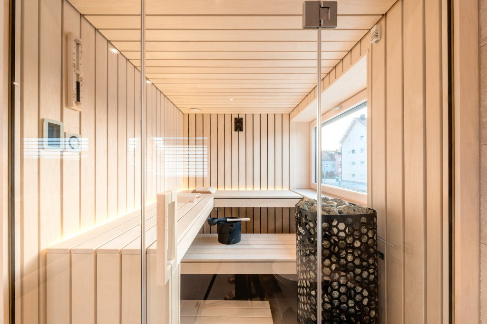
Zdaj imam savno, o kateri sem sanjala že nekaj časa, in to tako krasno izdelano, kot iz reklame. Cela kopalnica je zdaj poseben prostor, kjer se sprostiš že, ko stopiš noter.Simona K.
Tako profesionalno, hitro in prijazno montažo nisem pričakovala. Pohvala in zahvala fantoma!Urška K.
Hvala, da ste mi prodali vrhunski izdelek. Sem zelo zadovoljna in jo že uporabljam.Petra
Hvala za lep izdelek in super ekipo, od svetovanja do montaže.Jolanda V.
Hvala za izredno sodelovanje, vse pohvale tudi fantoma za izvedbo. Iz moje strani imate +5 referenco.Kaja
Še enkrat hvala za čudovito izdelano savno in za hitro izdelavo. Zdaj se veselim hladnih dni.Jožica M.
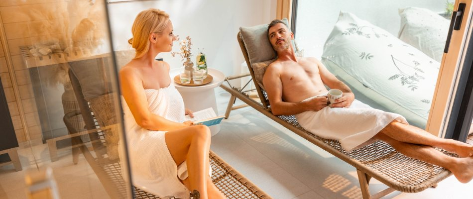
Z zavestnimi spremembami življenjskega sloga do boljše regeneracije in spanca.
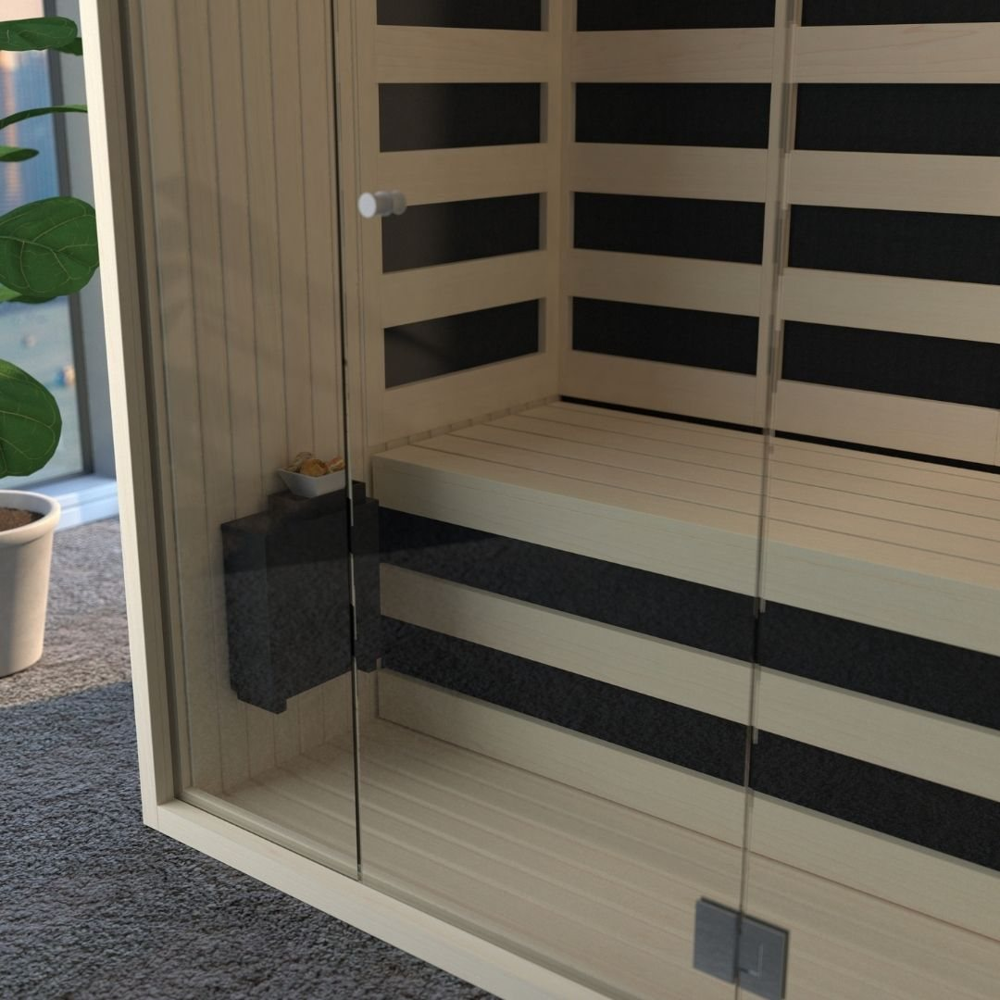
Infrardeča svetloba in razlika s finsko savno.
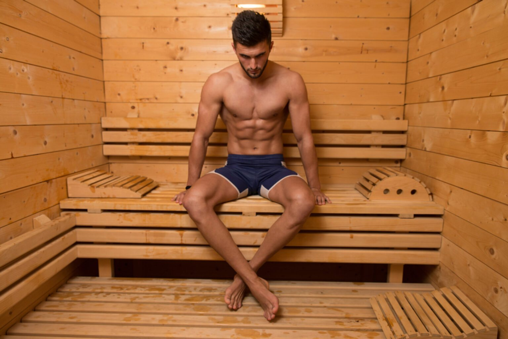
Kako savna pomaga pri regeneraciji po treningu.
Samo tako boste optimalno izkoristili svoj prostor in želje. Pridite v razstavni salon ali nam pišite.